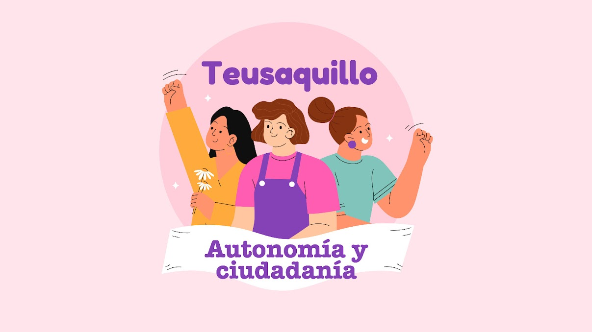
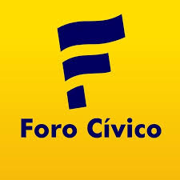
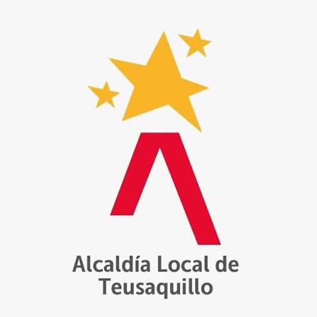

Acerca del proyecto
Conoce el propósito de la Vitrina Virtual de Mujeres Emprendedoras de Teusaquillo y las entidades que hacen posible esta iniciativa.
Impulsando el emprendimiento local
La Vitrina Virtual de Mujeres Emprendedoras de Teusaquillo es una iniciativa que busca fortalecer la visibilidad de los emprendimientos liderados por mujeres de la localidad, facilitando el acceso de la ciudadanía a sus productos y servicios.
Esta plataforma permite consultar los emprendimientos participantes, conocer su información de contacto y promover el consumo local.

Entidades participantes

Foro Cívico

Alcaldía Local de Teusaquillo
Secretaría Distrital de la Mujer
Contacto
Si deseas obtener más información sobre el proyecto o reportar alguna novedad relacionada con la plataforma, puedes comunicarte con el equipo administrador.
Correo: mujerteusaquillo@forocivico.com